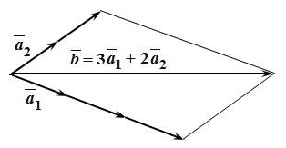

Тема заняття. Вектори у просторі, дії над векторами, що задані своїми координатами
Вектор. Основні поняття
Величини, які можна охарактеризувати лише числом, називаються скалярними. Приклади скалярних величин – маса, щільність, електричний заряд, температура. Величини, які визначаються не лише числовим значенням, а й напрямом у просторі, називають векторними. До них належать, зокрема, сила, переміщення, швидкість, прискорення, напруженість електричного та магнітного полів.
Вектором називається напрямлений відрізок, тобто відрізок, початок і кінець якого вказані.
Вектор, початком якого є точка А, а кінцем – точка В, позначається символом \(\overline{АВ}\). Часто вживається також позначення вектора однією малою буквою латинського алфавіту із стрілочкою зверху, наприклад, \(\vec{a}\), \(\vec{b}\), \(\vec{c}\), … .
Довжиною, або модулем вектора \(\overline{АВ}\) називається довжина відрізка АВ. Позначається \(|\overline{AB}|\).
Вектор називається нульовим, якщо початок і кінець його збігаються. Позначається нульовий вектор символом \(\vec{0}\).
Вектори називаються колінеарними, якщо вони лежать або на одній прямій, або на паралельних прямих.
Два вектори називаються рівними, якщо вони колінеарні, спрямовані в один бік і мають однакову довжину.
Два колінеарні вектори, які мають однакову довжину і протилежні напрямки, називаються взаємно протилежними.
Вектор, протилежний вектору \(\vec{a}\), позначається \(-\vec{a}\).
Вектор, довжина якого дорівнює одиниці, називається одиничним. Одиничний вектор того самого напряму, що й вектор \(\vec{a}\), називається його ортом.
Три вектори називаються компланарними, якщо вони паралельні одній площині або лежать у паралельних площинах.
Базис у просторі
Лінійна комбінація векторів – це сума заданих векторів, помножених на деякі числа: \(с_1\vec{a_1}+с_2\vec{a_2}+...+с_n\vec{a_n}=\vec{b}\).
Числа с1, с2,…, сn називають коефіцієнтами лінійної комбінації.
Так, наприклад, вектор \(\vec{d}=2\vec{a}-3\vec{b}+7\vec{c}\) є лінійною комбінацією векторів \(\vec{a}\), \(\vec{b}\) і \(\vec{c}\). На рисунку нижче зображено лінійну комбінацію, представлену вектором \(\vec{b}=3{\vec{a}}_1+2{\vec{a}}_2\).
Вектори \({\vec{a}}_1\), \({\vec{a}}_2\), …, \({\vec{a}}_n\) називають лінійно залежними, якщо їхня лінійна комбінація дорівнює нульовому вектору \(\vec{0}\) за умови, що хоча б один з коефіцієнтів с1, с2,…, сn відмінний від нуля.
Вектори \({\vec{a}}_1\), \({\vec{a}}_2\), …, \({\vec{a}}_n\) називають лінійно незалежними, якщо їхня лінійна комбінація дорівнює нульовому вектору \(\vec{0}\) лише у разі, коли всі коефіцієнти с1, с2,…, сn дорівнюють нулю.
Необхідною і достатньою умовою лінійної залежності трьох векторів є компланарність цих векторів.
Базис – це система лінійно незалежних векторів.
Базисом у просторі називають будь-які три некомпланарні вектори \(\vec{e}_1\), \(\vec{e}_2\), \(\vec{e}_3\).
Теорема. Нехай вектори \(\vec{e}_1\), \(\vec{e}_2\), \(\vec{e}_3\) утворюють базис у просторі. Тоді будь-який вектор \(\vec{a}\) може бути єдиним чином поданий у вигляді лінійної комбінації базисних векторів \(\vec{e}_1\), \(\vec{e}_2\), \(\vec{e}_3\):
\(\vec{a}=х⋅\vec{e}_1+у⋅\vec{e}_2+z⋅\vec{e}_3\) (1)
Рівність (1) називають розкладом вектора \(\vec{a}\) за базисом \(\vec{e}_1\), \(\vec{e}_2\), \(\vec{e}_3\), а числа х, у і z – координатами вектора \(\) у даному базисі; тобто запишемо \(\vec{a}\left(x;y;z\right)\).
Приклад 1. У просторі задано три вектори \(\vec{e_1}\left(2;-2;3\right)\), \(\vec{e_2}\left(4;-1;1\right)\) і \(\vec{e_3}\left(0;3;1\right)\). Знайти розклад вектора \(\vec{a}\left(2;7;6\right)\) за базисом \(\vec{e_1}\), \(\vec{e_2}\), \(\vec{e_3}\).
Розв’язання. Нехай вектор \(\vec{a}\) у базисі \(\vec{e_1}\), \(\vec{e_2}\), \(\vec{e_3}\) має координати \(\vec{a}\left(x;y;z\right)\), тоді користуючись формулою (1) його можна записати у вигляді \(\vec{a}=х⋅\vec{e}_1+у⋅\vec{e}_2+z⋅\vec{e}_3\), або в координатах заданих векторів як \(\left(\begin{matrix}2\\7\\6\\\end{matrix}\right)=x\cdot\left(\begin{matrix}2\\-2\\3\\\end{matrix}\right)+y\cdot\left(\begin{matrix}4\\-1\\1\\\end{matrix}\right)+z\cdot\left(\begin{matrix}0\\3\\1\\\end{matrix}\right)\). Порівнявши відповідні координати, отримаємо систему рівнянь:\(\left\{\begin{matrix}2=2x+4y+0\cdot z,\\7=-2x-y+3z,\\6=3x+y+z.\\\end{matrix}\right.\)
або як звично для нас\(\left\{\begin{matrix}2x+4y=2,\\-2x-y+3z=7,\\3x+y+z=6.\\\end{matrix}\right.\)
За формулами Крамера:
\(х=\frac{Δ_1}{Δ}\), \(y=\frac{Δ_2}{Δ}\), \(z=\frac{Δ_3}{Δ}\).
\(\Delta=\left|\begin{matrix}2&4&0\\-2&-1&3\\3&1&1\\\end{matrix}\right|=-2+36-6+8=36,\)
\(\Delta_1=\left|\begin{matrix}2&4&0\\7&-1&3\\6&1&1\\\end{matrix}\right|=-2+72-6-28=36,\)
\(\Delta_2=\left|\begin{matrix}2&2&0\\-2&7&3\\3&6&1\\\end{matrix}\right|=14+18-36+4=0,\)
\(\Delta_3=\left|\begin{matrix}2&4&2\\-2&-1&7\\3&1&6\\\end{matrix}\right|=-12+84-4+6-14+48=108,\)
Отже, координати вектора \(\vec{a}\) у заданому базисі: \(х=\frac{36}{36}=1\), \(y=\frac{0}{36}=0\), \(z=\frac{108}{36}=3\), а його розклад за базисом \(\vec{e_1}\), \(\vec{e_2}\), \(\vec{e_3}\) запишемо таким чином:
\(\vec{a}=\vec{е_1}+3\vec{е_3}\), або \(\vec{a}\left(1;0;3\right)\).
Прямокутна декартова система координат
Систему координат у просторі утворюють точка O (початок координат) і базис \(\vec{е}_1\), \(\vec{е}_2\), \(\vec{е}_3\), приведений до цієї точки.
Базис називають ортонормованим, якщо його вектори попарно ортогональні (перпендикулярні) і мають одиничну довжину. Система координат з ортонормованим базисом зветься декартовою прямокутною. В іншому разі систему координат називають загальною або косокутною чи афінною.
Далі мова йтиме про вектори в декартовій прямокутній системі координат.
Базисні вектори \(\vec{е}_1\), \(\vec{е}_2\), \(\vec{е}_3\) такої системи координат позначають зазвичай літерами \(\vec{i}\), \(\vec{j}\), \(\vec{k}\). Через початок координат О у напрямку базисних векторів \(\vec{i}\), \(\vec{j}\), \(\vec{k}\) проходять осі координат (абсцис, ординат, аплікат), які позначаються відповідно Ох, Оу, Оz.
Координатні площини xОy, xОz та yОz, що проходять через відповідні пари координатних осей, поділяють простір на 8 октантів.
Прямокутні декартові системи координат поділяють на ліві та праві.
Різниця між лівою та правою системами координат у просторі аналогічна відмінності між лівим та правим гвинтами в техніці.
Якщо привести вектори \(\vec{i}\), \(\vec{j}\), \(\vec{k}\) до спільного початку, то в правій системі координат найкоротший поворот від до з кінця вектора спостерігається проти ходу годинникової стрілки. У лівій системі координат цей поворот видно за ходом годинникової стрілки (рис.1).
Рис.1
Радіус-вектором точки М називається вектор \(\vec{r}=\vec{ОМ}\), спрямований з початку координат в цю точку.
Запишемо розклад радіус-вектора \(\vec{ОМ}\) за базисом \(\vec{i}\), \(\vec{j}\), \(\vec{k}\): \(\vec{ОМ}=х⋅\vec{i}+y⋅\vec{j}+z⋅\vec{k}\). Тут х, у, z – координати вектора \(\vec{ОМ}\) , які являють собою проекції цього вектора на координатні осі Ох, Оу, Оz.
Координатами точки М у заданій системі координат називають координати її радіус-вектора \(\vec{ОМ}\). Отже, точка М має координати х, у, z, що записують таким чином \(М\left(x;y;z\right)\) (рис.2).
Рис.2
Розклад довільного вектор \(\vec{a}\) за базисом \(\vec{i}\), \(\vec{j}\), \(\vec{k}\) має вигляд:
\(\vec{a}=а_х\vec{i}+a_y\vec{j}+a_z\vec{k}\), або \(\vec{a}\left(a_x;a_y;a_z\right)\)
У прямокутній системі координати вектора співпадають з його проекціями на осі Оx, Oy, Oz (рис.3).
Рис.3
Якщо відомі координати точок \(A\left(x_А;y_А;z_А\right)\), \(B\left(x_В;y_В;z_В\right)\), то координати вектора \(\vec{AB}\) дорівнюють різницям відповідних координат його кінця В і початку А. Отже, \(\vec{AB}\left(x_В-x_А;y_В-y_А;z_В-z_А\right)\). (2)
Довжина вектора
Нехай задано вектор \(\vec{a}=а_х\vec{i}+a_y\vec{j}+a_zvec{k}\) (рис.3), тобто \(\vec{a}\left(a_x;a_y;a_z\right)\).
Тоді довжина (модуль) вектора \(\) дорівнює діагоналі ОА паралелепіпеда, ребра якого ОВ, ОD, OK дорівнюють відповідно \(a_x,a_y,a_z\):
\(ОА^2=ОВ^2+OD^2+OK^2\)
або
\(\left|\vec{a}\right|^2=а_х^2+a_y^2+a_z^2\).
Отже, \(\left|\vec{a}\right|=\sqrt{a_x^2+a_y^2+a_z^2}\). (3)
Нехай задано вектор \(\vec{а}=\vec{AB}\), де \(A\left(x_1;y_1;z_1\right)\), \(B\left(x_2;y_2;z_2\right)\). В цьому разі вектор \(\vec{а}=x_2-x_1;y_2-y_1;z_2-z_1\), а його довжина
\(|\vec{а}|=|\vec{AB}|=\sqrt{\left(x_2-x_1\right)^2+\left(y_2-y_1\right)^2+\left(z_2-z_1\right)^2}\) (4)
Відстань між точками А і В обчислюється як довжина вектора \(\vec{AB}\) за формулою (4).
Напрямок вектора у просторі. Напрямні косинуси
Нехай ненульовий вектор \(\vec{a}\left(a_x;a_y;a_z\right)\) утворює з осями Ох, Оу, Оz кути α, β , γ (рис.4).
Рис.4
Оскільки координати вектора дорівнюють його проекціям на відповідні осі, то можна записати
\(cos{\alpha}=\frac{a_x}{\left|\vec{a}\right|}\), \(cos{\beta}=\frac{a_y}{\left|\vec{a}\right|}\), \(cos{\gamma}=\frac{a_z}{\left|\vec{a}\right|}\). (5)
Величини \(cos{\alpha}\), \(cos{\beta}\), \(cos{\gamma}\) називають напрямними косинусами вектора \(\vec{a}\). Вони пов’язані між собою співвідношенням
\({cos}^2{\alpha}+{cos}^2{\beta}+{cos}^2{\gamma}=1\).
Приклад 2. Знайти координати вектора \(\vec{а}=\vec{AB}\), записати його розклад за базисом \(\vec{i}\), \(\vec{j}\), \(\vec{k}\) та визначити напрямні косинуси вектора \(\vec{a}\), якщо \(A\left(3;3;1\right)\), \(B\left(5;1;2\right)\).
Розв’язання: За формулою (2) знайдемо координати вектора \(\vec{а}=\vec{AB}\left(5-3;1-3;2-1\right)\), \(\vec{а}\left(2;-2;1\right)\).
Розклад вектора \(\vec{a}\) за базисом \(\vec{i}\), \(\vec{j}\), \(\vec{k}\) має вид \(\vec{a}=2\vec{i}-2\vec{j}+\vec{k}\).
За формулою (3) знайдемо довжину вектора \(vec{а}\): \(\left|\vec{a}\right|=\sqrt{2^2+\left(-2\right)^2+1^2}=\sqrt{4+4+1}=\sqrt9=3\).
За формулою (5) знайдемо напрямні косинуси вектора \(\vec{а}\).
\(cos{\alpha}=\frac{a_x}{\left|\vec{a}\right|}=\frac{2}{3}\), \(cos{\beta}=\frac{a_y}{\left|\vec{a}\right|}=-\frac{2}{3}\), \(cos{\gamma}=\frac{a_z}{\left|\vec{a}\right|}=\frac{1}{3}\).
Дії над векторами, заданими своїми координатами
- Додавання і віднімання векторів
Сумою векторів \(\vec{a}\left(a_x;a_y;a_z\right)\) і \(\vec{b}\left(b_x;b_y;b_z\right)\) називається вектор
\(\vec{с}\left(a_x+b_x;a_y+b_y;a_z+b_z\right)\). (6)
Різницею векторів \(\vec{a}\left(a_x;a_y;a_z\right)\) і \(\vec{b}\left(b_x;b_y;b_z\right)\) називається вектор
\(\vec{d}\left(a_x-b_x;a_y-b_y;a_z-b_z\right)\). (7)
- Множення вектора на число
Добутком вектора \(\vec{a}\left(a_x;a_y;a_z\right)\) на число k називається вектор
\(\vec{b}\left(ka_x;ka_y;ka_z\right)\). (8)
- Умови колінеарності двох векторів
Якщо ж вектори \(\vec{a}\) та \(\vec{b}\) колінеарні, то \(\frac{a_x}{b_x}=\frac{a_y}{b_y}=\frac{a_z}{b_z}=k\). (9)
Приклад 3. Чи є колінеарними вектори \(\vec{с}=3\vec{а}-2\vec{b}\) і \(\vec{d}=2\vec{a}-3\vec{b}\), побудовані на векторах \(\vec{a}\left(1;-2;1\right)\) і \(\vec{b}\left(0;-3;4\right)\)?
Розв’язання: Знайдемо координати наступних векторів, користуючись формулою (8)
\(3\vec{а}\left(3;-6;3\right)\) \(2\vec{а}\left(2;-4;2\right)\) \(2\vec{b}\left(0;-6;8\right)\) \(3\vec{b}\left(0;-9;12\right)\)
За допомогою формули (7) знайдемо координати векторів \(\vec{с}=3\vec{а}-2\vec{b}\) і \(\vec{d}=2\vec{а}-3\vec{b}\): \(\vec{с}\left(3-0;-6-\left(-6\right);3-8\right)\),
\(\vec{с}\left(3;0;-5\right)\) \(\vec{d}\left(2-0;-4-\left(-9\right);3-8\right)\), \(\vec{d}\left(2;5;-5\right)\)
Перевіримо колінеарність (формула (9)): \(\frac{3}{2}\neq\frac{0}{5}\neq\frac{-5}{-5}\), тобто вектори \(\vec{c}\) і \(\vec{d}\) не колінеарні.
Скалярний добуток двох векторів
Нехай задані вектори \(\vec{a}\) та \(\vec{b}\).
|
Скалярним добутком двох векторів називається число, яке дорівнює добуткові довжин цих векторів на косинус кута між ними. |
Скалярний добуток векторів \(\vec{a}\) та \(\vec{b}\) позначається символом \(\vec{a}\cdot\vec{b}\). Отже, на основі означення маємо \(\).
Основні властивості скалярного добутку
- \(\vec{a}\cdot\vec{b}=\vec{b}\cdot\vec{a}\)
- \(\lambda\vec{a}\cdot\vec{b}=\lambda\left(\vec{a}\cdot\vec{b}\right)\)
- \(\left(\vec{a}+\vec{c}\right)\cdot\vec{b}=\vec{a}\cdot\vec{b}+\vec{c}\cdot\vec{b}\)
- Умова перпендикулярності векторів. Скалярний добуток ненульових векторів \(\vec{a}\) і \(\vec{b}\) дорівнює нулю тоді і тільки тоді, коли вектори взаємно перпендикулярні: \(\vec{a}\cdot\vec{b}=0\), якщо \(\vec{a}\bot\vec{b}\), і навпаки.
- Скалярний квадрат вектора дорівнює квадрату його довжини \(\vec{а}^2=\vec{a}⋅\vec{a}=|\vec{a}^2|\), звідки \(\left|\vec{a}\right|=\sqrt{\vec{a}\cdot\vec{a}}=\sqrt{\vec{а}^2}\).
Скалярний добуток в декартових координатах
Нехай \(\vec{a}\left(a_x;a_y;a_z\right)\), \(\vec{b}\left(b_x;b_y;b_z\right)\). Тоді, \(\vec{a}=а_х\vec{i}+а_y\vec{j}+а_z\vec{k}\), \(\vec{b}=b_х\vec{i}+b_y\vec{j}+b_z\vec{k}\), де \(\vec{i}\), \(\vec{j}\), \(\vec{k}\) - одиничні попарно перпендикулярні вектори, тобто \(\vec{i}\cdot\vec{i}=\vec{j}\cdot\vec{j}=\vec{k}\cdot\vec{k}=1\), \(\vec{i}\cdot\vec{j}=\vec{j}\cdot\vec{k}=\vec{k}\cdot\vec{i}=0\).
Враховуючи властивості скалярного добутку двох векторів, отримаємо \(\vec{a}\cdot\vec{b}=a_x\cdot b_x+a_y\cdot b_y+a_z\cdot b_z\).
Отже, скалярний добуток двох векторів дорівнює сумі добутків їх однойменних координат.
Приклад 4
Знайти довжини векторів \(\vec{а}=2\vec{p}+4\vec{q}\) і \( \vec{b}=\vec{p}-2\vec{q}\), якщо \(\left|\vec{p}\right|=3,\mathrm{\ \ }\left| \vec{q}\right|=4,\mathrm{\ \ }\phi=\frac{\pi}{3}\).
Розв’язок. Оскільки, \(\left|\vec{a}\right|=\sqrt{{\vec{a}}^2}\)
Знайдемо \({\vec{a}}^2\):
\({\vec{a}}^2=\left(2\vec{p}+4\vec{q}\right)^2=\left(2\vec{p}\right)^2+2\cdot\vec{p}\cdot\vec{q}+\left(4\vec{q}\right)^2=4{\vec{p}}^2+16\vec{p}\cdot\vec{q}+16{\vec{q}}^2=4\left|\vec{p}\right|^2+16\left|\vec{p}\right|\cdot\left|\vec{q}\right|\cdot\cos{\varphi}+16\left|\vec{q}\right|^2=4\cdot3^2+16\cdot3\cdot4\cdot\frac{1}{2}+16\cdot4^2=388\)
\(\left|\vec{a}\right|=\sqrt{{\vec{a}}^2}=\sqrt{388}\approx19,7\)
\({\vec{b}}^2=\left(\vec{p}-2\vec{q}\right)^2=\left(\vec{p}\right)^2-2\cdot\vec{p}\cdot2\vec{q}+\left(2\vec{q}\right)^2={\vec{p}}^2-4\vec{p}\cdot\vec{q}+4{\vec{q}}^2=\left|\vec{p}\right|^2-4\left|\vec{p}\right|\cdot\left|\vec{q}\right|\cdot c o s{\phi}+4\left|\vec{q}\right|^2=3^2-4\cdot3\cdot4\cdot\frac{1}{2}+4\cdot4^2=9-24+64=49\)
\(\left|\vec{b}\right|=\sqrt{{\vec{b}}^2}=\sqrt{49}=7\)
Застосування скалярного добутку
- кут між двома векторами
Якщо відомі координати векторів \(\vec{a}\) і \(\vec{b}\), то
\(cos{\phi}=\frac{\vec{a}\cdot\vec{b}}{\left|\vec{a}\right|\cdot\left|\vec{b}\right|}=\frac{a_x\cdot b_x+a_y\cdot b_y+a_z\cdot b_z}{\sqrt{a_x^2+a_y^2+a_z^2}\cdot\sqrt{b_x^2+b_y^2+b_z^2}}\).
- умова перпендикулярності (ортогональності) двох векторів
Якщо \(\vec{a}\bot\vec{b}\), то \(\vec{a}\cdot\vec{b}=0\), тобто \(a_x\cdot b_x+a_y\cdot b_y+a_z\cdot b_z=0\).
Приклад 5. З’ясувати чи вектори \(\vec{а}\) і \(\vec{b}\) перпендикулярні, якщо:
1) \(\vec{a}=\vec{i}+\vec{j}-4\vec{k}\), \(\vec{b}=\vec{i}-2\vec{j}+2\vec{k}\);
2) \(\vec{a}=3\vec{i}-\vec{j}+4\vec{k}\), \(\vec{b}=2\vec{i}+8\vec{j}+\frac{1}{2}\vec{k}\);
Розв’язок.
За умовою перпендикулярності векторів \(a_x\cdot b_x+a_y\cdot b_y+a_z\cdot b_z=0\) маємо:
1) \(\vec{a}\cdot\vec{b}=1\cdot1+1\cdot\left(-2\right)+\left(-4\right)\cdot2=1-2-8=-9\neq0\). Отже, вектори не перпендикулярні.
2) \(\vec{a}\cdot\vec{b}=3\cdot2+\left(-1\right)\cdot8+4\cdot\frac{1}{2}=6-8+2=0\). Отже, вектори перпендикулярні.